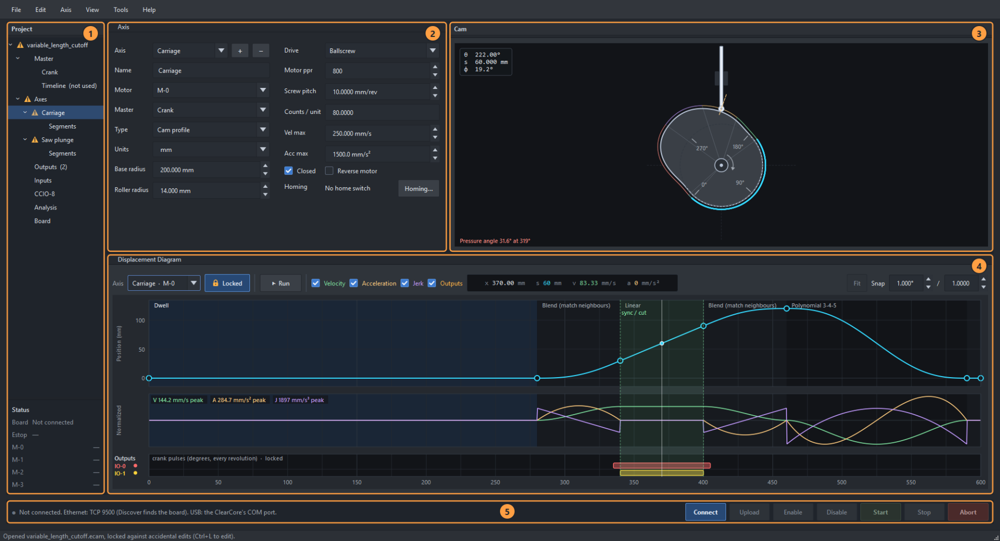
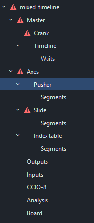
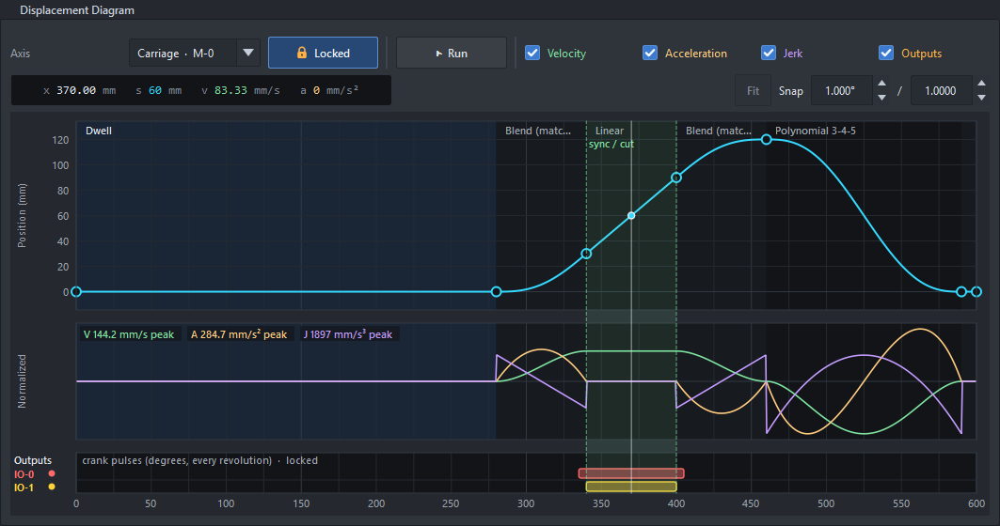
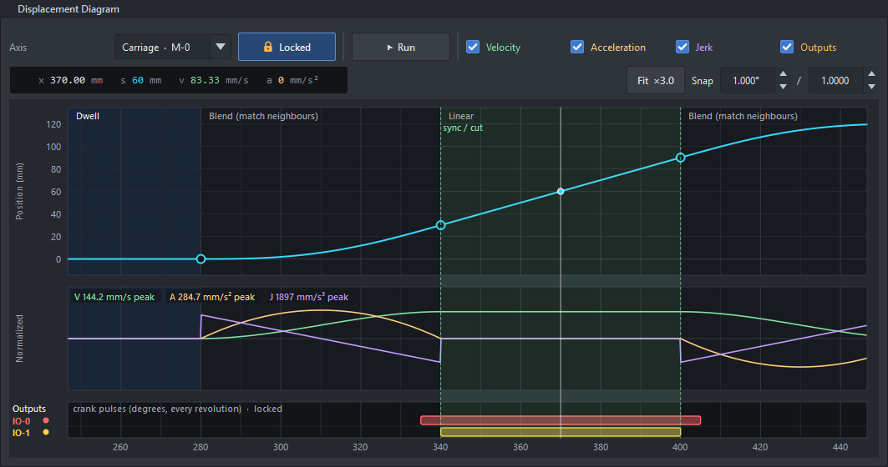
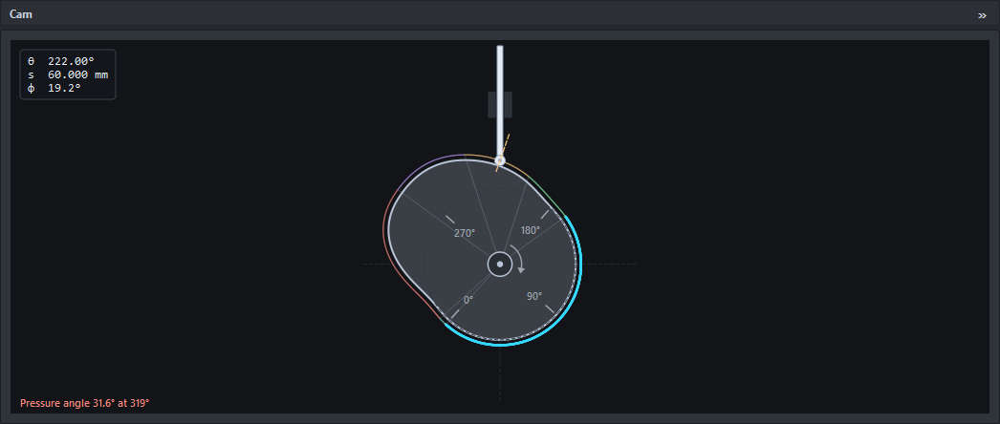
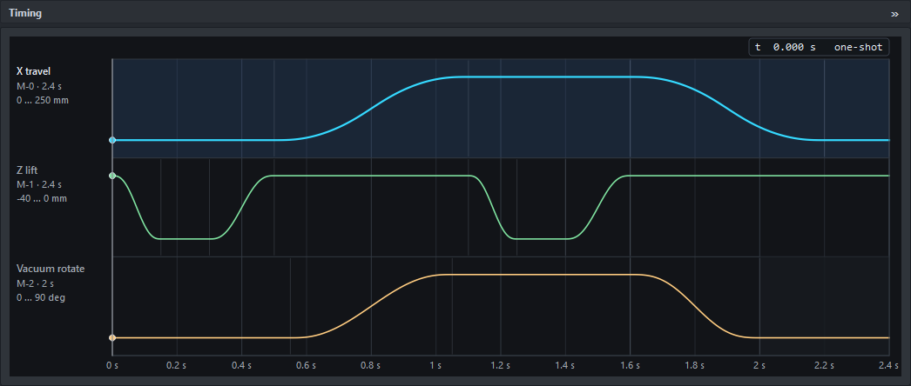

Everything about one project is on one screen, and the layout is remembered. It fits a 1920 × 1080 screen with nothing to scroll.

A flying saw (cut-length mode) open in the editor, the carriage axis selected.
| # | Part | What it is for |
|---|---|---|
| 1 | Project tree | The project's master, axes and their segments, outputs, inputs, CCIO-8, analysis and board. Click a node to open it in the detail pane. Under it, the Status panel. F9 or « hides both. |
| 2 | Detail pane | Whatever the tree has selected: Crank, Timeline, an axis, its Segments, Outputs, Analysis or Board. The diagram stays in view while you edit. |
| 3 | Cam / Timing | The selected crank axis drawn as a plate cam, or the Timing view of every timeline axis, whichever the selected axis is on (Ctrl+T: the Timing view for a crank axis too, in a project with both). Shift+F9 (View › Cam / Timing view) or » folds it away and gives the detail pane its width. |
| 4 | Displacement Diagram | The selected axis over its master, the full width of the window: position, then velocity, acceleration and jerk, then the Outputs band. Drag knots here. |
| 5 | Board strip | Whether the board is there, what it is doing, and the buttons that run it, always in view (see The board strip). |
Drag the line between the top row and the diagram to share the height differently. On a short window the top row gives way and its pages scroll, and it comes back when there is room.

The project tree. A triangle marks a node with a problem.
The tree is the project at a glance, with CCIO-8 inputs under their own node. Clicking an axis selects it everywhere, and the tree follows the diagram's Axis list; clicking a segment in the diagram opens Segments. Right-click an axis for the Axis menu.
A triangle marks what the project review found: red for an error, amber for a warning. Hover over the node to read it. A problem with an axis is on that axis, a problem with the master on Crank or Timeline, and one that belongs to the whole project, such as two axes on one motor, on the project. Headings and the project show the worst thing under them, so folding a branch can't hide a red one. Analysis has the details for the selected axis.
Under the project tree, the board as it is now: what it is doing, the estop (OK, Open, or Off when the board ignores it, see Estop), and each motor connector, M-0 to M-3. A motor reads Disabled, Enabled (with its HLFB up), Enabled, no HLFB (enabled but the motor isn't saying it is ready: still enabling, or not connected), or Fault. When the open project is the one on the board, each motor shows its axis's name, or Crank. A latched fault shows under the motors. Drag the line above it to give the tree more or less room. With no board connected it shows dashes.

Position (top), velocity and acceleration (middle, normalized) and the Outputs band (bottom). The green band is the saw's sync window.
The bar above the diagram holds, from the left:
On a narrow window the readout, Fit and Snap wrap to a second row.
Ctrl+wheel zooms the master axis about the mouse (all bands together), Ctrl + / − about the cursor, Ctrl+0 or Fit shows the whole cycle. Middle-drag or Shift+wheel pans while zoomed.

Zoomed ×3 on the saw's sync: the grid gets finer, the knots and pulses stay editable.

The cam view: the crank axis drawn as the plate cam it replaces, with the follower at 12 o'clock.
A crank axis drawn as the mechanical plate cam it replaces: the cam turns clockwise, the follower is a translating roller at 12 o'clock, coloured by segment. The dashed orange line is the contact normal (the pressure angle). Drag the cam to turn it, the wheel steps 1° (Shift: 10°). The box in the corner reads the crank angle θ, position s and pressure angle φ. Base and roller radius (Axis page) only change this drawing and the DXF export.

The Timing view: every timeline axis on one time axis, with the output pulses.
Every timeline axis on the shared timeline, with the timeline's output pulses. It shows when a timeline axis is selected. In a project with crank and timeline axes, View › Timing view for crank axes (Ctrl+T) keeps it up while a crank axis is selected too. Click an axis's row to select it; scrub to move the cursor.
| Menu | Holds |
|---|---|
| File | New, guided setup, open, recent, examples, start page, save, exports (CSV, C header, cam DXF, Excel workbook). |
| Edit | Undo / redo (every edit; a drag is one step), split and delete segment. |
| Axis | Add, duplicate and remove axes (up to four, one per motor connector). |
| View | Project tree (F9), Cam / Timing view (Shift+F9: shows or hides the pane), Timing view for crank axes (Ctrl+T, projects with both kinds of axis). |
| Tools | ClearPath scope (Ctrl+Shift+O). |
| Help | This guide (F1), worked examples, keys, the scope, About. |